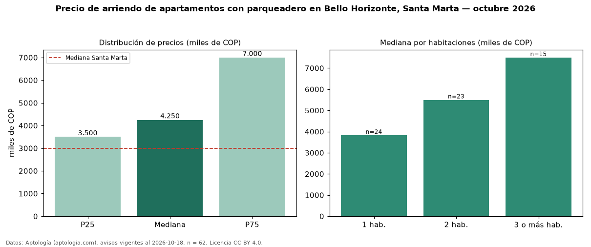

Precio de arriendo de apartamentos con parqueadero en Bello Horizonte, Santa Marta — octubre 2026
COP 4,25 millones al mes es el canon mediano de apartamentos con parqueadero en arriendo en Bello Horizonte, Santa Marta (n = 62 avisos). Eso es 6 % menos que la mediana de todos los apartamentos en arriendo de Bello Horizonte (COP 4,50 millones, n = 73); este segmento reúne el 85 % de esos avisos. Por metro cuadrado, la mediana es COP 52.530/m² al mes (n = 62), 4 % por debajo del conjunto de referencia (COP 54.861/m²). El área mediana anunciada es 84 m². El segmento con más oferta es el de 1 habitación (24 avisos, mediana COP 3,83 millones); pasar de 1 habitación a 3 o más habitaciones cambia la mediana +96 %. La administración mediana declarada es COP 700.000 al mes (n = 25), aparte del canon. La mitad central de los avisos va de COP 3,50 millones a COP 7,00 millones (razón 2,0), una dispersión alta. El estrato más frecuente es 6 (75 % de los avisos con estrato). Datos: Aptología (aptologia.com), CC BY 4.0 — https://www.aptologia.com/arriendo/santa-marta. Archivos: PDF, CSV con las cifras y gráfica PNG.

| Avisos únicos | 62 |
|---|---|
| Percentil 25 | COP 3.500.000 |
| Mediana | COP 4.250.000 |
| Percentil 75 | COP 7.000.000 |
| Mediana por m² | COP 52.529 |
Fuente: avisos vigentes de portales inmobiliarios recopilados por Aptología, deduplicados (mínimo 30 avisos únicos por celda). Precios pedidos, no cerrados. Fecha: 2026-10-18.